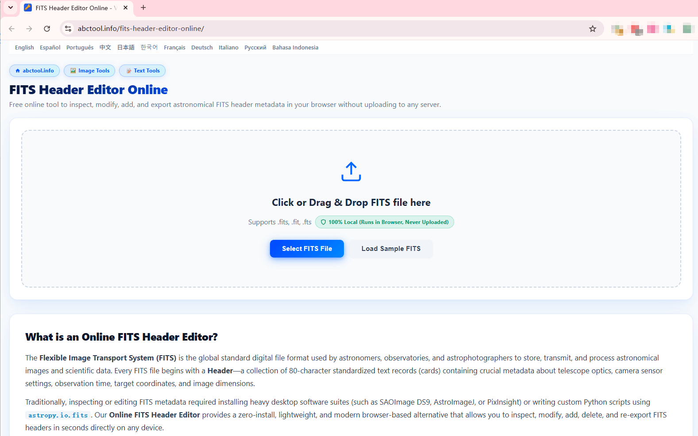
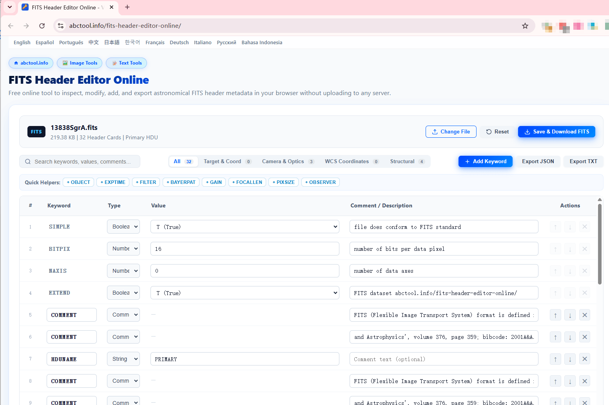

観測データ専門家による技術レビュー：デスクトップ専用ソフト、Pythonスクリプト、最新のブラウザWebAssemblyツールの比較分析。
FITS（Flexible Image Transport System）は、1981年以来、天文学における世界共通のデータ標準フォーマットです。すべての天体画像や分光データには、座標、センサーゲイン、フィルター、光学系を記録した80文字単位の標準カードが含まれています。
OBJECT、EXPTIME、FILTERなど）の修正のみを行う場合、1.5GBを超えるPixInsightの起動やPython環境の構築は過剰です。FITS Header Editor Onlineなら、インストール不要・サーバー送信なしで、ブラウザ内で100%安全かつ即座に処理が完了します。
ディスク占有容量、セットアップの手間、プライバシー保護、操作性の4つの観点から比較します：
| 比較項目 | 天体用デスクトップ製品 (PixInsight, SAOImage DS9) |
Pythonプログラミング (astropy.io.fits) |
ブラウザオンラインツール (abctool.info/fits-header-editor-online/) |
|---|---|---|---|
| ディスク容量 (サイズ) |
非常に重い (~80MB – 1.8GB+) DS9は約80MB、PixInsightは1.5GB以上とスワップ領域が必要です。 |
中程度 (~250MB – 600MB) Python環境、NumPy、Astropyライブラリ一式が必要です。 |
容量ゼロ (0 MB) WebAssembly/JS技術によりブラウザ上で直接動作します。 |
| 導入の手間 | インストーラーの実行、管理者権限、有償ライセンス設定が必要。 |
コマンドライン操作、pip install astropy、スクリプト作成が必要。
|
即座に利用可能 (0秒) Webページを開いてファイルをドラッグ＆ドロップするだけ。 |
| データの安全性とプライバシー |
100% ローカル ローカルマシンで処理。 |
100% ローカル 自作スクリプトで処理。 |
100% クライアント完結 ブラウザメモリ内で処理し、外部サーバーへ送信しません。 |
| カードの視覚的編集と検証 | 複数ウィンドウ構成。フォーマット崩れに注意が必要。 | 辞書型のように代入可能だが、ファイル書き出しコードが必要。 |
インタラクティブなテーブル ブール値のドロップダウン、80文字制限の自動検証、並べ替え対応。 |
| クイック追加ボタン | 手動でキー名とコメントを入力。 | IAU標準カード名をコード内で覚える必要がある。 |
ワンクリック補助+ OBJECT、+ EXPTIME、+ FILTER などの専用ボタン。
|
| マルチプラットフォーム対応 | デスクトップ限定（Windows, Mac, Linux）。タブレット不可。 | サーバーおよび開発環境限定。 |
全デバイス対応 Windows、Mac、iPad、Linux、Chromebookで動作。 |
| エクスポート機能 | プロジェクト全体または上書き保存。 | JSONやテキスト出力用のコード作成が必要。 |
更新後の .fits ダウンロード、JSON や TXT 出力に対応。
|
スタックソフト（Siril、DeepSkyStackerなど）で位置合わせに失敗した場合、最初の原因調査はヘッダーの確認です：
.fits、.fit、.fts）を点線枠内にドラッグ＆ドロップするか、Select FITS File をクリックします。13838SgrA.fits）を読み込みます。
読み込み後、標準80桁のFITSカードが一覧表示されます：

CRVAL1）や値を入力するだけで素早くカードを抽出できます。T (True) / F (False)）で切り替え可能。文字列や数値も桁あふれを防止します。+ OBJECT、+ FILTER、+ BAYERPAT などのボタンを押すだけで標準キーを自動挿入できます。↑ / ↓ で順序を変更し、✕ で不要なカードを削除できます。編集完了後、Save & Download FITS をクリックすると、2880バイト単位に整形されたヘッダーと画像データが結合され、標準規格に準拠した .fits ファイルがダウンロードされます。
ベイヤー配列やWCS座標の修復方法を詳しく解説した実践編もご覧ください：